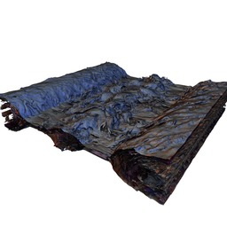

OSPRay Demos
This page serves as a repository for 'ready-to-run' demos for OSPRay (currently, all
demos as intended for OSPRay V0.7.0).
If you do not yet have a version of OSPRay installed on your system, you can follow these
instructions for getting OSPRay.
|
 |
"Daughton Space Weather" IsoSurface
Disclaimer: Model courtesy Bill Daughton (LANL)
and Berk Geveci (KitWare). When used in papers, please
cite this
paper.
Demo Highlights
- Iso-surface of the Daughton Space Weather volume data
set, generated with ParaView, and exported through
ParaView's X3D exporter.
- Original data is
1024^3 voxels per time
step, the generated iso-surface has roughly 36 million
triangles
- OSPRay's Ambient Occlusion renderer (
ao4)
greatly helps in bringing out the 3D shape of the
surface.
Instructions
|
 |
"FIU" Ground Water Simulation
Disclaimer: Model courtesy Texas Advanced Computing
Center (TACC) and Florida International University. Please
obtain TACC/FIU's permission before using this model in any
public demonstrations.
Demo Highlights
- Dataset captured from VTK-based ParaView renderer
through TACC's GLURay tool.
- Stream lines in this data set are actually
tessellated. OSPRay could do them natively, but ParaView
tessellated internally.
- Rendered via OSPRay's Ambient Occlusion based
renderer. To see a comparison with/without Ambient
occlusion, see this
page.
Instructions
- Download fiu.xml
and fiu.xml.bin.
- run via
./ospModelViewer fiu.xml --renderer ao
- to run on Phi:
./ospModelViewer fiu.xml --renderer ao --osp:coi
- run via OBJ renderer rather than Ambient Occlusion:
./ospModelViewer fiu.xml --renderer obj --sun-dir -1.5 -1 -1
|
 |
"XFrog Forest" - A 1.7 billion triangle forest model
Disclaimer: Model courtesy Oliver Deussen,
University of Konstanz; modelled via the XFrog tool
(www.xfrog.com). Please acknowledge accordingly when
using/showing this demo.
Demo Highlights
- 1.7 billion triangles (377,266 instances of 69 different
kinds of plants, for a total of 1,679,235,546 triangles
after instantiation).
- Additional detail through high-resolution alpha
"stencil" textures to stencil detailed leaf shapes out of
already highly detailed geometry
- Costly: requires many rays per pixel to handle the
(high!) number of transparency layers.
Instructions
|
 |
"NASA Streamlines"
Disclaimer: Model courtesy Timothy Sandstrom, NASA.
Disclaimer Model courtesy Timothy Sandstrom, NASA.
Demo Highlights
- Model of a magnetic field on the sun, visualized through
a attribute-mapped iso-surface of the B-field, plus a set of
stream lines.
- The stream lines are not tessellated, but OSPRay's
actual "streamlines" primitive (essentially, a set of
smoothly connected cylinders), which makes for a very
memory-efficient representation.
- Ambient occlusion greatly helps in understanding the
shape of the streamlines (when rendered with local-only
shading, it looks like a "lint ball").
Instructions
|
For information about compiler optimizations, see our
Optimization Notice.


{kind=link}